<!DOCTYPE html><html><head><meta charset="utf-8"><title>JavaScript 之旅 (22)：BigInt | Titangene Blog</title><meta http-equiv="X-UA-Compatible" content="IE=edge"><meta name="viewport" content="width=device-width,initial-scale=1,maximum-scale=1"><meta name="HandheldFriendly" content="True"><meta name="apple-mobile-web-app-capable" content="yes"><meta name="author" content="Titangene"><link rel="shortcut icon" href="/favicon.ico"><link rel="alternate" href="/atom.xml" title="Titangene Blog"><meta name="description" content="本篇介紹 ES2020 (ES11) 提供的 BigInt。"><meta property="og:type" content="article"><meta property="og:title" content="JavaScript 之旅 (22)：BigInt"><meta property="og:url" content="https://titangene.github.io/article/javascript-bigint.html"><meta property="og:site_name" content="Titangene Blog"><meta property="og:description" content="本篇介紹 ES2020 (ES11) 提供的 BigInt。"><meta property="og:locale" content="zh_TW"><meta property="og:image" content="https://titangene.github.io/images/cover/javascript.jpg"><meta property="article:published_time" content="2020-10-07T06:55:20.000Z"><meta property="article:modified_time" content="2020-10-08T01:15:34.666Z"><meta property="article:author" content="Titangene"><meta property="article:tag" content="IT 鐵人賽"><meta property="article:tag" content="ECMAScript"><meta name="twitter:card" content="summary_large_image"><meta name="twitter:image" content="https://titangene.github.io/images/cover/javascript.jpg"><meta name="twitter:creator" content="@titangeneTW"><meta name="twitter:site" content="@titangene_blog"><meta property="fb:admins" content="100001106016019"><meta property="fb:app_id" content="2470546159839111"><meta property="og:image:width" content="1200"><meta property="og:image:height" content="630"><meta name="google-site-verification" content="AaJ39L7h-nWwJjXJMhAMtXSF6H6BUgGWXC80kYvLic8"><link href="https://fonts.googleapis.com/css2?family=Roboto&display=swap" rel="stylesheet"><link href="https://fonts.googleapis.com/css?family=Source+Code+Pro&display=swap" rel="stylesheet"><link rel="stylesheet" href="https://cdnjs.cloudflare.com/ajax/libs/font-awesome/5.13.0/css/all.min.css"><link rel="stylesheet" href="https://unpkg.com/gitalk/dist/gitalk.css"><link rel="stylesheet" href="/style.css"><script async src="https://www.googletagmanager.com/gtag/js?id=G-KX04S5LSX1"></script><script>!function(a){function n(){dataLayer.push(arguments)}a.dataLayer=a.dataLayer||[],n("js",new Date),n("config","G-KX04S5LSX1")}(window)</script><script>function setLoadingBarProgress(e){document.getElementById("loading-bar").style.width=e+"%"}</script><meta name="generator" content="Hexo 4.2.0"><link rel="alternate" href="/atom.xml" title="Titangene Blog" type="application/atom+xml"></head></html><body><div id="loading-bar-wrapper"><div id="loading-bar"></div></div><script>setLoadingBarProgress(20)</script><header class="l_header"><div class="wrapper"><div class="nav-main container container--flex"><a class="logo flat-box" href="/">Titangene Blog</a><div class="menu"><ul class="h-list"><li><a class="flat-box nav-home" href="/">Home</a></li><li><a class="flat-box nav-archives" href="/archives">Archives</a></li></ul><div class="underline"></div></div><div class="m_search"><form name="searchform" class="form u-search-form"><input type="text" class="input u-search-input" placeholder="Search"> <i class="fas fa-search"></i></form></div><ul class="switcher h-list"><li class="s-search"><a class="fas fa-search" href="javascript:void(0)"></a></li><li class="s-menu"><a class="fas fa-bars" href="javascript:void(0)"></a></li></ul></div><div class="nav-sub container container--flex"><a class="logo flat-box" href="/">Titangene Blog</a><ul class="switcher h-list"><li class="s-comment"><a class="far fa-comment-alt" href="javascript:void(0)"></a></li><li class="s-top"><a class="fas fa-arrow-up" href="javascript:void(0)"></a></li><li class="s-toc"><a class="fas fa-list-ol" href="javascript:void(0)"></a></li></ul></div></div></header><aside class="menu-phone"><nav><a href="/" class="nav-home nav">Home </a><a href="/archives" class="nav-archives nav">Archives</a></nav></aside><script>setLoadingBarProgress(40)</script><div class="l_body"><div class="container clearfix"><div class="l_main"><article id="post-javascript-bigint" class="post white-box article-type-post" itemscope itemprop="blogPost"><section class="meta"><h2 class="title"><a href="/article/javascript-bigint.html">JavaScript 之旅 (22)：BigInt</a></h2><span class="post-time"><span class="post-meta-item-icon"><i class="fa fa-calendar"></i> </span><span class="post-meta-item-text">發表於</span> <time title="建立時間：2020-10-07 14:55:20" itemprop="dateCreated datePublished" datetime="2020-10-07T14:55:20+08:00">2020-10-07 </time><span class="post-meta-divider">|</span> <span class="post-meta-item-icon"><i class="fa fa-calendar-check"></i> </span><span class="post-meta-item-text">更新於</span> <time title="修改時間：2020-10-08 09:15:34" itemprop="dateModified" datetime="2020-10-08T09:15:34+08:00">2020-10-08</time></span> <span class="comments-count"><span class="post-meta-divider">|</span> <span class="post-meta-item-icon"><i class="fas fa-comment"></i> </span><a href="https://titangene.github.io/article/javascript-bigint.html#comments" class="article-comment-count">留言</a></span><div class="post-category"><span class="post-meta-item-icon"><i class="fa fa-folder"></i> </span><span class="post-meta-item-text">分類於</span> <span itemprop="about" itemscope itemtype="http://schema.org/Thing"><a href="/categories/javascript/" itemprop="url" rel="index"><span itemprop="name">JavaScript</span></a></span></div></section><section class="toc-wrapper"><h3>目錄</h3><ol class="toc"><li class="toc-item toc-level-1"><a class="toc-link" href="#過去-Number"><span class="toc-text">過去 Number</span></a></li><li class="toc-item toc-level-1"><a class="toc-link" href="#現代的-BigInt"><span class="toc-text">現代的 BigInt</span></a><ol class="toc-child"><li class="toc-item toc-level-2"><a class="toc-link" href="#語法"><span class="toc-text">語法</span></a></li><li class="toc-item toc-level-2"><a class="toc-link" href="#各種運算子的數學運算"><span class="toc-text">各種運算子的數學運算</span></a></li><li class="toc-item toc-level-2"><a class="toc-link" href="#數值比較"><span class="toc-text">數值比較</span></a></li><li class="toc-item toc-level-2"><a class="toc-link" href="#條件判斷"><span class="toc-text">條件判斷</span></a></li><li class="toc-item toc-level-2"><a class="toc-link" href="#有些無法成功強制轉型，會拋出-exception"><span class="toc-text">有些無法成功強制轉型，會拋出 exception</span></a></li><li class="toc-item toc-level-2"><a class="toc-link" href="#不能和-Number-一起使用"><span class="toc-text">不能和 Number 一起使用</span></a></li><li class="toc-item toc-level-2"><a class="toc-link" href="#可與-String-進行串接"><span class="toc-text">可與 String 進行串接</span></a></li><li class="toc-item toc-level-2"><a class="toc-link" href="#BigInt-constructor-不能傳入-Number-或-String-型別的小數"><span class="toc-text">BigInt() constructor 不能傳入 Number 或 String 型別的小數</span></a></li></ol></li><li class="toc-item toc-level-1"><a class="toc-link" href="#資料來源"><span class="toc-text">資料來源</span></a></li></ol></section><section class="article typo"><div class="article-entry" itemprop="articleBody"><p></p><p>本篇介紹 ES2020 (ES11) 提供的 <code>BigInt</code>。</p><a id="more"></a><blockquote><p>本文同步發表於 iT 邦幫忙：<a href="https://ithelp.ithome.com.tw/articles/10250362" target="_blank" rel="noopener">JavaScript 之旅 (22)：BigInt</a></p><p>「JavaScript 之旅」系列文章發文於：</p><ul><li><a href="https://ithelp.ithome.com.tw/users/20117586/ironman/3607" target="_blank" rel="noopener">iT 邦幫忙</a></li><li><a href="https://titangene.github.io/tags/it-%E9%90%B5%E4%BA%BA%E8%B3%BD/">Titangene Blog</a></li></ul></blockquote><h1 id="過去-Number"><a class="header-anchor" href="#過去-Number"></a>過去 <code>Number</code></h1><p>在過去，只要 JavaScript 提到 primitive 就會想到 <code>String</code>、<code>Number</code>、<code>Boolean</code>，但其實還有在 ES6 提供的 <code>Symbol</code>，另外在 spec 的定義中還有 <code>Undefined</code>、<code>Null</code>。</p><p>除了以上這些，還有本篇要介紹的新 primitive：<code>BigInt</code>。</p><p>下面是 spec 對 <a href="https://www.ecma-international.org/ecma-262/#sec-primitive-value" target="_blank" rel="noopener">primitive value</a> 的定義：</p><p>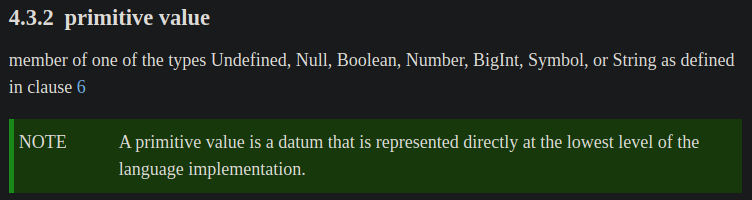</p><p><code>Number</code> 只能安全地表示最大為 $2^{53}$ 的整數，但有時會有大整數的需求，例如：</p><ul><li>社群貼文 ID (例如：<a href="https://developer.twitter.com/en/docs/twitter-ids" target="_blank" rel="noopener">Twitter ID</a>)，在 JavaScript 只能用字串儲存</li><li>FinTech 會需要很大的整數，且需要有任意精度的整數來表示金額</li></ul><p>例如：在 JavaScript 竟然 <code>2 ** 53</code> 會等於 <code>2 ** 53 + 1</code>：</p><figure class="highlight javascript"><table><tr><td class="gutter"><pre><span class="line">1</span><br><span class="line">2</span><br><span class="line">3</span><br><span class="line">4</span><br><span class="line">5</span><br><span class="line">6</span><br><span class="line">7</span><br><span class="line">8</span><br><span class="line">9</span><br><span class="line">10</span><br><span class="line">11</span><br><span class="line">12</span><br><span class="line">13</span><br><span class="line">14</span><br><span class="line">15</span><br></pre></td><td class="code"><pre><code class="hljs javascript"><span class="hljs-keyword">let</span> x = <span class="hljs-number">2</span> ** <span class="hljs-number">53</span>;<br><span class="hljs-keyword">let</span> y = <span class="hljs-number">2</span> ** <span class="hljs-number">53</span> + <span class="hljs-number">1</span>;<br><br><span class="hljs-built_in">console</span>.log(x);<br><span class="hljs-comment">// 9007199254740992</span><br><span class="hljs-built_in">console</span>.log(y);<br><span class="hljs-comment">// 9007199254740992</span><br><br><span class="hljs-built_in">console</span>.log(x === y);<br><span class="hljs-comment">// true</span><br><br><span class="hljs-built_in">console</span>.log(<span class="hljs-keyword">typeof</span> x);<br><span class="hljs-comment">// number</span><br><span class="hljs-built_in">console</span>.log(<span class="hljs-keyword">typeof</span> y);<br><span class="hljs-comment">// number</span><br></code></pre></td></tr></table></figure><p>很奇怪吧！所以這就是 <code>BigInt</code> 被提出的原因！</p><blockquote><p>為何會有這個現象是跟 <a href="https://en.wikipedia.org/wiki/IEEE_754" target="_blank" rel="noopener">IEEE 754</a> 的浮點數定義有關，詳請可參閱 <a href="https://docs.google.com/presentation/d/1apPbAiv_-mJF35P31IjaII8UA6TwSynCA_zhfDEmgOE/edit#slide=id.g38a1897a56_0_97" target="_blank" rel="noopener">Daniel Ehrenberg 在 JSConf EU 2018 的 演講簡報</a> 和 <a href="https://www.youtube.com/watch?v=RiU5OzMZ7z8" target="_blank" rel="noopener">演講影片</a>。</p></blockquote><h1 id="現代的-BigInt"><a class="header-anchor" href="#現代的-BigInt"></a>現代的 <code>BigInt</code></h1><p><code>BigInt</code> 是一種可用來表示 arbitrary precision (任意精度，高精度) 的整數，也就是可以表示大於 $2^{53}$ 的整數。</p><p>例如：剛剛 <code>2 ** 53</code> 和 <code>2 ** 53 + 1</code> 的例子若改用 <code>BigInt</code> 就會如你預期的不一樣 (本來就不同啊 XD)：</p><figure class="highlight javascript"><table><tr><td class="gutter"><pre><span class="line">1</span><br><span class="line">2</span><br><span class="line">3</span><br><span class="line">4</span><br><span class="line">5</span><br><span class="line">6</span><br><span class="line">7</span><br><span class="line">8</span><br><span class="line">9</span><br><span class="line">10</span><br><span class="line">11</span><br><span class="line">12</span><br><span class="line">13</span><br><span class="line">14</span><br><span class="line">15</span><br></pre></td><td class="code"><pre><code class="hljs javascript"><span class="hljs-keyword">let</span> x = <span class="hljs-number">2n</span> ** <span class="hljs-number">53n</span>;<br><span class="hljs-keyword">let</span> y = <span class="hljs-number">2n</span> ** <span class="hljs-number">53n</span> + <span class="hljs-number">1n</span>;<br><br><span class="hljs-built_in">console</span>.log(x);<br><span class="hljs-comment">// 9007199254740992n</span><br><span class="hljs-built_in">console</span>.log(y);<br><span class="hljs-comment">// 9007199254740993n</span><br><br><span class="hljs-built_in">console</span>.log(x === y);<br><span class="hljs-comment">// false</span><br><br><span class="hljs-built_in">console</span>.log(<span class="hljs-keyword">typeof</span> x);<br><span class="hljs-comment">// bigint</span><br><span class="hljs-built_in">console</span>.log(<span class="hljs-keyword">typeof</span> y);<br><span class="hljs-comment">// bigint</span><br></code></pre></td></tr></table></figure><h2 id="語法"><a class="header-anchor" href="#語法"></a>語法</h2><p><code>BigInt</code> 的語法和 <code>Number</code> 直接寫整數不太一樣，<code>BigInt</code> literal (字面值) 是在整數的後面加上 <code>n</code> 後綴：</p><figure class="highlight javascript"><table><tr><td class="gutter"><pre><span class="line">1</span><br><span class="line">2</span><br><span class="line">3</span><br><span class="line">4</span><br><span class="line">5</span><br><span class="line">6</span><br></pre></td><td class="code"><pre><code class="hljs javascript"><span class="hljs-keyword">let</span> x = <span class="hljs-number">9007199254740992n</span>;<br><br><span class="hljs-built_in">console</span>.log(x);<br><span class="hljs-comment">//9007199254740992n</span><br><span class="hljs-built_in">console</span>.log(<span class="hljs-keyword">typeof</span> x);<br><span class="hljs-comment">// bigint</span><br></code></pre></td></tr></table></figure><p>另一種方式是呼叫 constructor 來建立 <code>BigInt</code>：</p><figure class="highlight javascript"><table><tr><td class="gutter"><pre><span class="line">1</span><br><span class="line">2</span><br><span class="line">3</span><br><span class="line">4</span><br><span class="line">5</span><br><span class="line">6</span><br></pre></td><td class="code"><pre><code class="hljs javascript"><span class="hljs-keyword">let</span> x = BigInt(<span class="hljs-number">9007199254740992</span>);<br><br><span class="hljs-built_in">console</span>.log(x);<br><span class="hljs-comment">//9007199254740992n</span><br><span class="hljs-built_in">console</span>.log(<span class="hljs-keyword">typeof</span> x);<br><span class="hljs-comment">// bigint</span><br></code></pre></td></tr></table></figure><h2 id="各種運算子的數學運算"><a class="header-anchor" href="#各種運算子的數學運算"></a>各種運算子的數學運算</h2><p><code>BigInt</code> 在 <code>+</code>、<code>-</code>、<code>*</code>、<code>**</code> 和 <code>%</code> 的運算上跟 <code>Number</code> 差不多 (這邊說的差不多是指整數小於 $2^{53}$ 的情況下)：</p><figure class="highlight javascript"><table><tr><td class="gutter"><pre><span class="line">1</span><br><span class="line">2</span><br><span class="line">3</span><br><span class="line">4</span><br><span class="line">5</span><br><span class="line">6</span><br><span class="line">7</span><br><span class="line">8</span><br><span class="line">9</span><br><span class="line">10</span><br><span class="line">11</span><br><span class="line">12</span><br><span class="line">13</span><br><span class="line">14</span><br></pre></td><td class="code"><pre><code class="hljs javascript"><span class="hljs-keyword">let</span> x = <span class="hljs-number">9007199254740992n</span>;<br><br><span class="hljs-built_in">console</span>.log(x + <span class="hljs-number">1n</span>);<br><span class="hljs-comment">// 9007199254740993n</span><br><span class="hljs-built_in">console</span>.log(x - <span class="hljs-number">1n</span>);<br><span class="hljs-comment">// 9007199254740991n</span><br><span class="hljs-built_in">console</span>.log(x * <span class="hljs-number">2n</span>);<br><span class="hljs-comment">// 18014398509481984n</span><br><span class="hljs-built_in">console</span>.log(x * <span class="hljs-number">-2n</span>);<br><span class="hljs-comment">// -18014398509481984n</span><br><span class="hljs-built_in">console</span>.log(x ** <span class="hljs-number">2n</span>);<br><span class="hljs-comment">// 81129638414606681695789005144064n</span><br><span class="hljs-built_in">console</span>.log(x % <span class="hljs-number">10n</span>);<br><span class="hljs-comment">// 2n</span><br></code></pre></td></tr></table></figure><p>但在小數運算上跟 <code>Number</code> 不同，因為 <code>BigInt</code> 不是 <code>BigDecimals</code>，所以會 rounded towards 0，即不保留任何小數 (類似無條件捨去)：</p><figure class="highlight javascript"><table><tr><td class="gutter"><pre><span class="line">1</span><br><span class="line">2</span><br><span class="line">3</span><br><span class="line">4</span><br><span class="line">5</span><br><span class="line">6</span><br><span class="line">7</span><br><span class="line">8</span><br><span class="line">9</span><br><span class="line">10</span><br><span class="line">11</span><br><span class="line">12</span><br><span class="line">13</span><br><span class="line">14</span><br></pre></td><td class="code"><pre><code class="hljs javascript"><span class="hljs-built_in">console</span>.log(<span class="hljs-number">5</span> / <span class="hljs-number">2</span>);<br><span class="hljs-comment">// 2.5</span><br><span class="hljs-built_in">console</span>.log(<span class="hljs-number">5n</span> / <span class="hljs-number">2n</span>);<br><span class="hljs-comment">// 2n</span><br><br><span class="hljs-built_in">console</span>.log(<span class="hljs-number">5</span> / <span class="hljs-number">3</span>);<br><span class="hljs-comment">// 1.6666666666666667</span><br><span class="hljs-built_in">console</span>.log(<span class="hljs-number">5n</span> / <span class="hljs-number">3n</span>);<br><span class="hljs-comment">// 1n</span><br><br><span class="hljs-built_in">console</span>.log(<span class="hljs-number">5</span> / <span class="hljs-number">4</span>);<br><span class="hljs-comment">// 1.25</span><br><span class="hljs-built_in">console</span>.log(<span class="hljs-number">5n</span> / <span class="hljs-number">4n</span>);<br><span class="hljs-comment">// 1n</span><br></code></pre></td></tr></table></figure><p>在 spec 中的 <a href="https://www.ecma-international.org/ecma-262/#sec-numeric-types-bigint-divide" target="_blank" rel="noopener"><code>BigInt::divide ( x, y )</code></a> 就有定義 rounded towards 0：</p><p>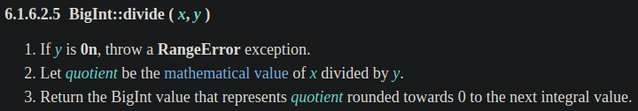</p><h2 id="數值比較"><a class="header-anchor" href="#數值比較"></a>數值比較</h2><p><code>BigInt</code> 不嚴格等於 (not strictly equal) <code>Number</code>，例如：</p><figure class="highlight javascript"><table><tr><td class="gutter"><pre><span class="line">1</span><br><span class="line">2</span><br><span class="line">3</span><br><span class="line">4</span><br><span class="line">5</span><br></pre></td><td class="code"><pre><code class="hljs javascript"><span class="hljs-built_in">console</span>.log(<span class="hljs-number">0n</span> === <span class="hljs-number">0</span>);<br><span class="hljs-comment">// false</span><br><br><span class="hljs-built_in">console</span>.log(<span class="hljs-number">0n</span> == <span class="hljs-number">0</span>);<br><span class="hljs-comment">// true</span><br></code></pre></td></tr></table></figure><p>在 spec 中的「<a href="https://www.ecma-international.org/ecma-262/#sec-strict-equality-comparison" target="_blank" rel="noopener">Strict Equality Comparison</a>」有定義：</p><ul><li>步驟 1：當兩個值的型別不同時，就會回傳 <code>false</code>，即不嚴格等於</li><li>步驟 2：其中一個值的型別為 <code>Number</code> 或 <code>BigInt</code> 就會回傳 <code>Type(x)::equal(x, y)</code></li></ul><p>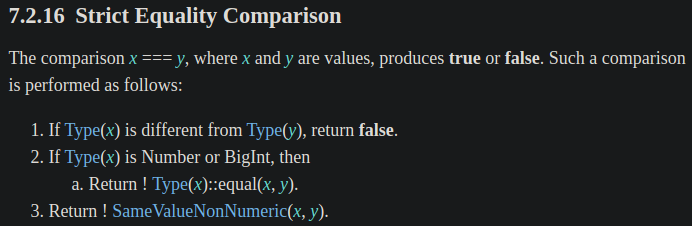</p><p>若將上面範例中的 <code>0n</code> 帶入 spec，那 <code>0n</code> 就是 <code>x</code>，所以代表步驟 2 會去執行 <a href="https://www.ecma-international.org/ecma-262/#sec-numeric-types-bigint-equal" target="_blank" rel="noopener"><code>BigInt::equal (x, y)</code></a>，spec 的定義如下：只要兩個值的數學整數值相等時，就會回傳 <code>true</code>，否則回傳 <code>false</code></p><p>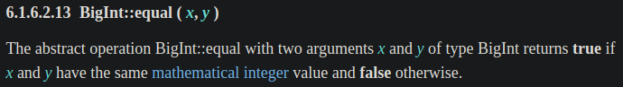</p><p>但可照常用 <code>&gt;</code>、<code>&lt;</code>、<code>&gt;=</code> 和 <code>&lt;=</code> 進行比較，例如：</p><figure class="highlight javascript"><table><tr><td class="gutter"><pre><span class="line">1</span><br><span class="line">2</span><br><span class="line">3</span><br><span class="line">4</span><br><span class="line">5</span><br><span class="line">6</span><br><span class="line">7</span><br><span class="line">8</span><br><span class="line">9</span><br><span class="line">10</span><br><span class="line">11</span><br><span class="line">12</span><br><span class="line">13</span><br><span class="line">14</span><br><span class="line">15</span><br><span class="line">16</span><br><span class="line">17</span><br><span class="line">18</span><br><span class="line">19</span><br></pre></td><td class="code"><pre><code class="hljs javascript"><span class="hljs-built_in">console</span>.log(<span class="hljs-number">3n</span> &gt; <span class="hljs-number">2</span>);<br><span class="hljs-comment">// true</span><br><span class="hljs-built_in">console</span>.log(<span class="hljs-number">3n</span> &lt; <span class="hljs-number">2</span>);<br><span class="hljs-comment">// false</span><br><br><span class="hljs-built_in">console</span>.log(<span class="hljs-number">2</span> &lt; <span class="hljs-number">3n</span>);<br><span class="hljs-comment">// true</span><br><span class="hljs-built_in">console</span>.log(<span class="hljs-number">2</span> &gt; <span class="hljs-number">3n</span>);<br><span class="hljs-comment">// false</span><br><br><span class="hljs-built_in">console</span>.log(<span class="hljs-number">2</span> &lt; <span class="hljs-number">2n</span>);<br><span class="hljs-comment">// false</span><br><span class="hljs-built_in">console</span>.log(<span class="hljs-number">2</span> &gt; <span class="hljs-number">2n</span>);<br><span class="hljs-comment">// false</span><br><br><span class="hljs-built_in">console</span>.log(<span class="hljs-number">2</span> &lt;= <span class="hljs-number">2n</span>);<br><span class="hljs-comment">// true</span><br><span class="hljs-built_in">console</span>.log(<span class="hljs-number">2</span> &gt;= <span class="hljs-number">2n</span>);<br><span class="hljs-comment">// true</span><br></code></pre></td></tr></table></figure><h2 id="條件判斷"><a class="header-anchor" href="#條件判斷"></a>條件判斷</h2><p>若將 <code>BigInt</code> 強制轉型成 <code>Boolean</code>，行為會跟 <code>Number</code> 類似。</p><p>例如：<code>if</code> 陳述句</p><figure class="highlight javascript"><table><tr><td class="gutter"><pre><span class="line">1</span><br><span class="line">2</span><br><span class="line">3</span><br><span class="line">4</span><br><span class="line">5</span><br><span class="line">6</span><br><span class="line">7</span><br><span class="line">8</span><br><span class="line">9</span><br><span class="line">10</span><br><span class="line">11</span><br><span class="line">12</span><br><span class="line">13</span><br><span class="line">14</span><br></pre></td><td class="code"><pre><code class="hljs javascript"><span class="hljs-keyword">if</span> (<span class="hljs-number">0</span>) &#123;<br>  <span class="hljs-built_in">console</span>.log(<span class="hljs-string">'if'</span>)<br>&#125; <span class="hljs-keyword">else</span> &#123;<br>  <span class="hljs-built_in">console</span>.log(<span class="hljs-string">'else'</span>)<br>&#125;<br><span class="hljs-comment">// else</span><br><br><br><span class="hljs-keyword">if</span> (<span class="hljs-number">0n</span>) &#123;<br>  <span class="hljs-built_in">console</span>.log(<span class="hljs-string">'if'</span>)<br>&#125; <span class="hljs-keyword">else</span> &#123;<br>  <span class="hljs-built_in">console</span>.log(<span class="hljs-string">'else'</span>)<br>&#125;<br><span class="hljs-comment">// else</span><br></code></pre></td></tr></table></figure><p><a href="https://www.ecma-international.org/ecma-262/#sec-if-statement-runtime-semantics-evaluation" target="_blank" rel="noopener"><code>if</code> 陳述句</a>會將值進行 <code>ToBoolean()</code> 強制轉型，spec 定義如下：</p><p>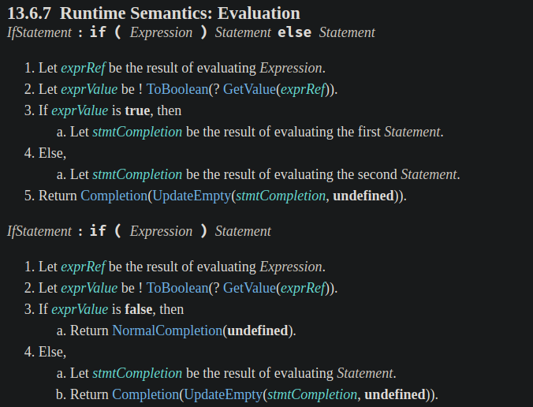</p><p>例如：二元邏輯運算子 (binary logical operator) 的 <code>&amp;&amp;</code> 和 <code>||</code>：</p><figure class="highlight javascript"><table><tr><td class="gutter"><pre><span class="line">1</span><br><span class="line">2</span><br><span class="line">3</span><br><span class="line">4</span><br><span class="line">5</span><br><span class="line">6</span><br><span class="line">7</span><br><span class="line">8</span><br><span class="line">9</span><br></pre></td><td class="code"><pre><code class="hljs javascript"><span class="hljs-built_in">console</span>.log(<span class="hljs-number">0</span> || <span class="hljs-number">10</span>);<br><span class="hljs-comment">// 10</span><br><span class="hljs-built_in">console</span>.log(<span class="hljs-number">0</span> &amp;&amp; <span class="hljs-number">10</span>);<br><span class="hljs-comment">// 0</span><br><br><span class="hljs-built_in">console</span>.log(<span class="hljs-number">0n</span> || <span class="hljs-number">10n</span>);<br><span class="hljs-comment">// 10n</span><br><span class="hljs-built_in">console</span>.log(<span class="hljs-number">0n</span> &amp;&amp; <span class="hljs-number">10n</span>);<br><span class="hljs-comment">// 0n</span><br></code></pre></td></tr></table></figure><p><a href="https://www.ecma-international.org/ecma-262/#sec-binary-logical-operators-runtime-semantics-evaluation" target="_blank" rel="noopener"><code>&amp;&amp;</code> 和 <code>||</code></a> 會將值進行 <code>ToBoolean()</code> 強制轉型，spec 定義如下：</p><p>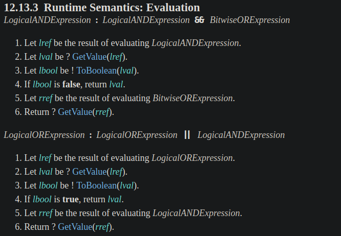</p><p>例如：使用 <code>Boolean()</code> constructor：</p><figure class="highlight javascript"><table><tr><td class="gutter"><pre><span class="line">1</span><br><span class="line">2</span><br><span class="line">3</span><br><span class="line">4</span><br><span class="line">5</span><br><span class="line">6</span><br><span class="line">7</span><br><span class="line">8</span><br><span class="line">9</span><br></pre></td><td class="code"><pre><code class="hljs javascript"><span class="hljs-built_in">console</span>.log(<span class="hljs-built_in">Boolean</span>(<span class="hljs-number">0</span>));<br><span class="hljs-comment">// false</span><br><span class="hljs-built_in">console</span>.log(<span class="hljs-built_in">Boolean</span>(<span class="hljs-number">10</span>));<br><span class="hljs-comment">// true</span><br><br><span class="hljs-built_in">console</span>.log(<span class="hljs-built_in">Boolean</span>(<span class="hljs-number">0n</span>));<br><span class="hljs-comment">// false</span><br><span class="hljs-built_in">console</span>.log(<span class="hljs-built_in">Boolean</span>(<span class="hljs-number">10n</span>));<br><span class="hljs-comment">// true</span><br></code></pre></td></tr></table></figure><p><a href="https://www.ecma-international.org/ecma-262/#sec-boolean-constructor-boolean-value" target="_blank" rel="noopener"><code>Boolean()</code> constructor</a> 會將值進行 <code>ToBoolean()</code> 強制轉型，spec 定義如下：</p><p>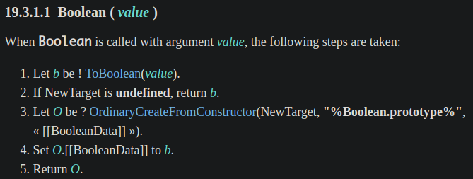</p><p>例如：邏輯 NOT 運算子 (logical NOT operator) <code>!</code>：</p><figure class="highlight javascript"><table><tr><td class="gutter"><pre><span class="line">1</span><br><span class="line">2</span><br><span class="line">3</span><br><span class="line">4</span><br><span class="line">5</span><br><span class="line">6</span><br><span class="line">7</span><br><span class="line">8</span><br><span class="line">9</span><br></pre></td><td class="code"><pre><code class="hljs javascript"><span class="hljs-built_in">console</span>.log(!<span class="hljs-number">0</span>);<br><span class="hljs-comment">// true</span><br><span class="hljs-built_in">console</span>.log(!<span class="hljs-number">10</span>);<br><span class="hljs-comment">// false</span><br><br><span class="hljs-built_in">console</span>.log(!<span class="hljs-number">0n</span>);<br><span class="hljs-comment">// true</span><br><span class="hljs-built_in">console</span>.log(!<span class="hljs-number">10n</span>);<br><span class="hljs-comment">// false</span><br></code></pre></td></tr></table></figure><p><a href="https://www.ecma-international.org/ecma-262/#sec-logical-not-operator" target="_blank" rel="noopener"><code>!</code></a> 會將值進行 <code>ToBoolean()</code> 強制轉型，spec 定義如下：</p><p>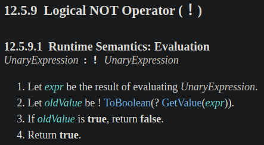</p><p>上面說的這些都將值進行 <code>ToBoolean()</code> 強制轉型，下面是 <a href="https://www.ecma-international.org/ecma-262/#sec-toboolean" target="_blank" rel="noopener"><code>ToBoolean()</code></a> 的定義：只有 <code>0n</code> 會回傳 <code>false</code>，其他都回傳 <code>true</code> (跟 <code>Number</code> 很像對吧？有興趣的可以看 <code>Number</code> 的部份)</p><p>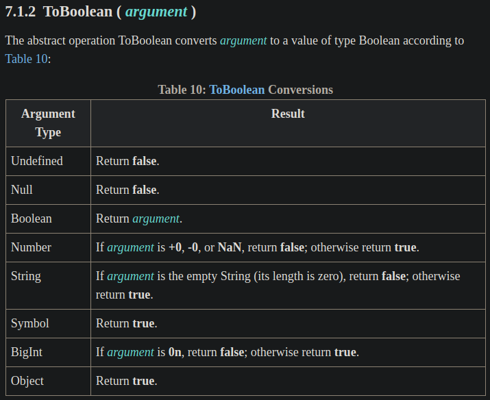</p><p>所以這就是 <code>0n</code> 會變成 <code>false</code> 的原因！</p><h2 id="有些無法成功強制轉型，會拋出-exception"><a class="header-anchor" href="#有些無法成功強制轉型，會拋出-exception"></a>有些無法成功強制轉型，會拋出 exception</h2><p><code>BigInt</code> 不能和 unary <code>+</code> 運算子一起使用，需先用 <code>Number()</code> constructor 轉換：</p><figure class="highlight javascript"><table><tr><td class="gutter"><pre><span class="line">1</span><br><span class="line">2</span><br><span class="line">3</span><br><span class="line">4</span><br></pre></td><td class="code"><pre><code class="hljs javascript"><span class="hljs-built_in">console</span>.log(+<span class="hljs-number">1n</span>);<br><span class="hljs-comment">// TypeError: Cannot convert a BigInt value to a number</span><br><span class="hljs-built_in">console</span>.log(<span class="hljs-built_in">Number</span>(<span class="hljs-number">1n</span>));<br><span class="hljs-comment">// 1</span><br></code></pre></td></tr></table></figure><p>在 spec 是有定義的，因為 <a href="https://www.ecma-international.org/ecma-262/#sec-unary-plus-operator" target="_blank" rel="noopener">unary <code>+</code> 運算子</a>會進行 <code>ToNumber()</code> 的強制轉型：</p><p>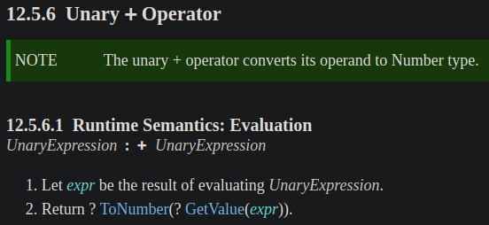</p><p>但 <a href="https://www.ecma-international.org/ecma-262/#sec-tonumber" target="_blank" rel="noopener"><code>ToNumber()</code></a> 只要遇到 <code>BigInt</code> 就會拋出 <code>TypeError</code> exception：</p><p>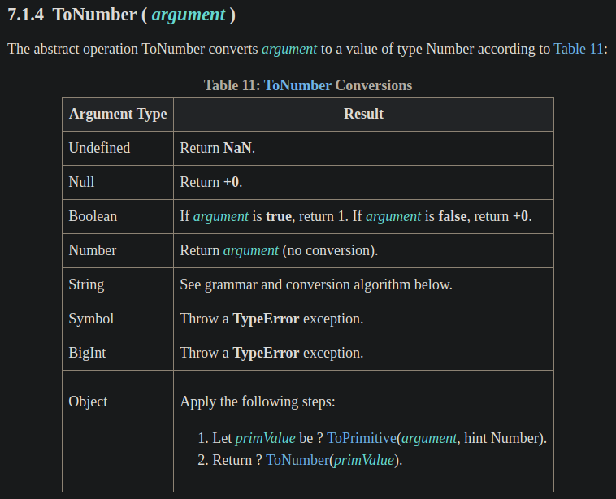</p><h2 id="不能和-Number-一起使用"><a class="header-anchor" href="#不能和-Number-一起使用"></a>不能和 <code>Number</code> 一起使用</h2><p>不能和 <code>Number</code> 一起使用，否則會拋出 <code>TypeError</code>：</p><figure class="highlight javascript"><table><tr><td class="gutter"><pre><span class="line">1</span><br><span class="line">2</span><br><span class="line">3</span><br><span class="line">4</span><br></pre></td><td class="code"><pre><code class="hljs javascript"><span class="hljs-built_in">console</span>.log(<span class="hljs-number">1n</span> + <span class="hljs-number">2</span>);<br><span class="hljs-comment">// TypeError: Cannot mix BigInt and other types, use explicit conversions</span><br><span class="hljs-built_in">console</span>.log(<span class="hljs-number">1n</span> * <span class="hljs-number">2</span>);<br><span class="hljs-comment">// TypeError: Cannot mix BigInt and other types, use explicit conversions</span><br></code></pre></td></tr></table></figure><p>若要和 <code>Number</code> 一起使用，請先用 <code>Number()</code> constructor 強制轉型 (即 explicit conversions) 成 <code>Number</code>：</p><figure class="highlight javascript"><table><tr><td class="gutter"><pre><span class="line">1</span><br><span class="line">2</span><br><span class="line">3</span><br><span class="line">4</span><br></pre></td><td class="code"><pre><code class="hljs javascript"><span class="hljs-built_in">console</span>.log(<span class="hljs-built_in">Number</span>(<span class="hljs-number">1n</span>) + <span class="hljs-number">2</span>);<br><span class="hljs-comment">// 3</span><br><span class="hljs-built_in">console</span>.log(<span class="hljs-built_in">Number</span>(<span class="hljs-number">1n</span>) * <span class="hljs-number">2</span>);<br><span class="hljs-comment">// 2</span><br></code></pre></td></tr></table></figure><p>下面是 <a href="https://www.ecma-international.org/ecma-262/#sec-addition-operator-plus" target="_blank" rel="noopener"><code>+</code> 運算子</a>在 spec 中的定義，其中的步驟 8 和 9 都會將 <code>+</code> 左右邊的兩個運算元進行 <code>ToNumeric()</code> 的強制轉型：</p><p>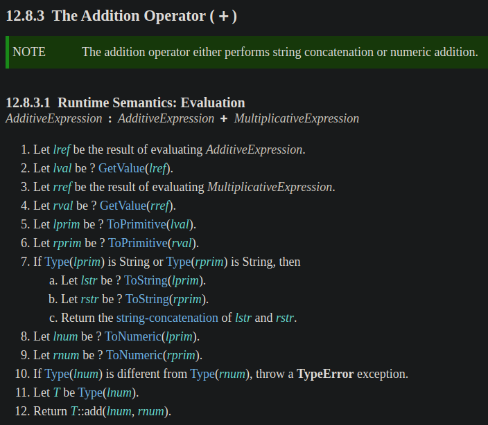</p><p>而下面是 <a href="https://www.ecma-international.org/ecma-262/#sec-tonumeric" target="_blank" rel="noopener"><code>ToNumeric()</code></a> 的定義，可以看到步驟 2，只要值為 <code>BigInt</code> 就直接回傳值，所以不會跑到步驟 3：</p><p>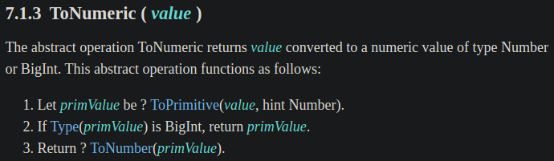</p><blockquote><p>步驟 1 的 <a href="https://www.ecma-international.org/ecma-262/#sec-toprimitive" target="_blank" rel="noopener"><code>ToPrimitive()</code></a> 只會對型別為 <code>Object</code> 的值才會有特殊行為，所以本篇會跳過這邊的細節 XD，<s>否則篇幅會更長</s>，在這裡可以簡單當作將 <code>BigInt</code> 型別的值傳給 <code>ToPrimitive()</code> 會回傳一樣的值，不會有任何強制轉型的行為。</p><p>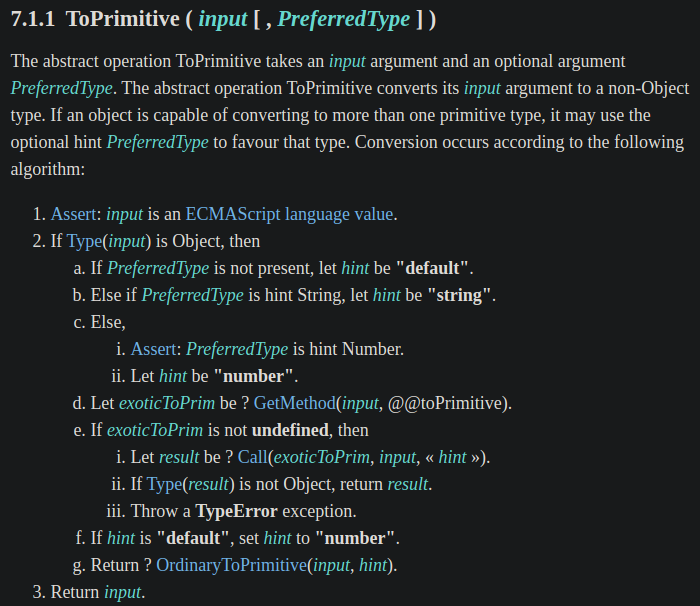</p></blockquote><p>接著回到 <a href="https://www.ecma-international.org/ecma-262/#sec-addition-operator-plus" target="_blank" rel="noopener"><code>+</code> 運算子</a>的步驟 (圖重貼一次)：</p><ul><li>在步驟 8 和 9 時，其中一個值的型別為 <code>Number</code>，另一個為 <code>BigInt</code> (因為前面的範例是 <code>1n + 2</code> )</li><li>在步驟 10 只要兩個值的型別不同，就會拋出 <code>TypeError</code> exception</li></ul><p></p><p>所以這就是 <code>BigInt</code> 不能和 <code>Number</code> 一起使用的原因。</p><h2 id="可與-String-進行串接"><a class="header-anchor" href="#可與-String-進行串接"></a>可與 <code>String</code> 進行串接</h2><p>例如：</p><figure class="highlight javascript"><table><tr><td class="gutter"><pre><span class="line">1</span><br><span class="line">2</span><br><span class="line">3</span><br><span class="line">4</span><br></pre></td><td class="code"><pre><code class="hljs javascript"><span class="hljs-built_in">console</span>.log(<span class="hljs-number">1n</span> + <span class="hljs-string">'2'</span>);<br><span class="hljs-comment">// 12</span><br><span class="hljs-built_in">console</span>.log(<span class="hljs-string">'2'</span> + <span class="hljs-number">1n</span>);<br><span class="hljs-comment">// 21</span><br></code></pre></td></tr></table></figure><h2 id="BigInt-constructor-不能傳入-Number-或-String-型別的小數"><a class="header-anchor" href="#BigInt-constructor-不能傳入-Number-或-String-型別的小數"></a><code>BigInt()</code> constructor 不能傳入 <code>Number</code> 或 <code>String</code> 型別的小數</h2><p>例如：</p><figure class="highlight javascript"><table><tr><td class="gutter"><pre><span class="line">1</span><br><span class="line">2</span><br><span class="line">3</span><br><span class="line">4</span><br></pre></td><td class="code"><pre><code class="hljs javascript"><span class="hljs-built_in">console</span>.log(BigInt(<span class="hljs-number">2.5</span>));<br><span class="hljs-comment">// RangeError: The number 2.5 cannot be converted to a BigInt because it is not an integer</span><br><span class="hljs-built_in">console</span>.log(BigInt(<span class="hljs-string">'2.5'</span>));<br><span class="hljs-comment">// SyntaxError: Cannot convert 2.5 to a BigInt</span><br></code></pre></td></tr></table></figure><p>下面是 <a href="https://www.ecma-international.org/ecma-262/#sec-bigint-constructor-number-value" target="_blank" rel="noopener"><code>BigInt()</code> constructor</a> 在 spec 的定義：</p><ul><li>步驟 2：將值進行 <code>ToPrimitive()</code> 強制轉型</li><li>步驟 3：若值的型別為 <code>Number</code>，則進行 <code>NumberToBigInt(prim)</code> 強制轉型</li><li>步驟 4：進行 <code>ToBigInt()</code> 強制轉型</li></ul><p>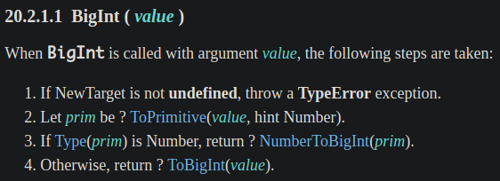</p><p>先來看為何不能傳入 <code>Number</code> 型別的小數？這跟步驟 3 有關，會進行 <code>NumberToBigInt(prim)</code> 強制轉型，spec 的定義如下：</p><ul><li>步驟 2：若值不是整數就會拋出 <code>RangeError</code> exception</li></ul><p>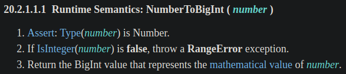</p><p>那為何不能傳入 <code>String</code> 型別的小數？這跟步驟 4 有關，會進行 <a href="https://www.ecma-international.org/ecma-262/#sec-tobigint" target="_blank" rel="noopener"><code>ToBigInt()</code></a> 強制轉型，spec 的定義如下：</p><ul><li>步驟 1：進行 <code>StringToBigInt()</code> 強制轉型</li><li>步驟 2：若強制轉型的結果為 <code>NaN</code>，會拋出 <code>SyntaxError</code> exception</li></ul><p>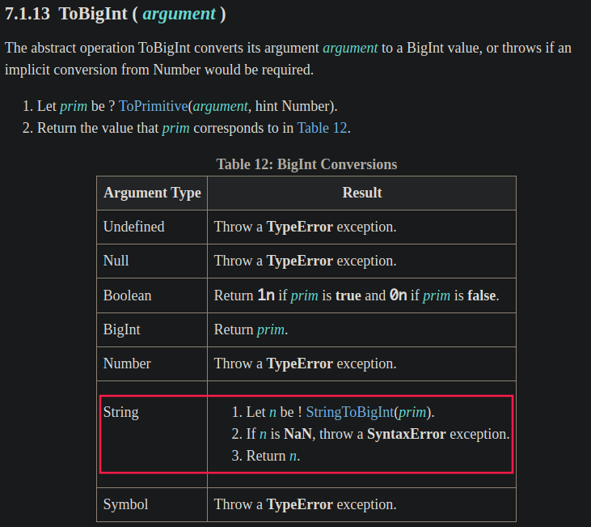</p><p>而下面是 <a href="https://www.ecma-international.org/ecma-262/#sec-stringtobigint" target="_blank" rel="noopener"><code>StringToBigInt()</code></a> 的定義：</p><ul><li>用 <a href="https://www.ecma-international.org/ecma-262/#prod-DecimalDigits" target="_blank" rel="noopener">DecimalDigits</a> 取代 <a href="https://www.ecma-international.org/ecma-262/#prod-StrUnsignedDecimalLiteral" target="_blank" rel="noopener">StrUnsignedDecimalLiteral</a> production，以不允許 <code>Infinity</code>、小數點或指數</li><li>若 <a href="https://www.ecma-international.org/ecma-262/#mathematical-value" target="_blank" rel="noopener">MV (mathematical value)</a> 為 <code>NaN</code>，則回傳 <code>NaN</code>，否則回傳與 MV 完全對應的 <code>BigInt</code>，而不是四捨五入成 <code>Number</code></li></ul><p>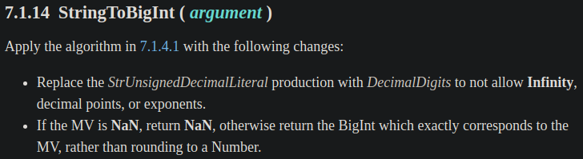</p><p>所以字串會透過 <code>StringToBigInt()</code> 強制轉行成 <code>NaN</code>，就會拋出 <code>SyntaxError</code> exception。</p><h1 id="資料來源"><a class="header-anchor" href="#資料來源"></a>資料來源</h1><ul><li><a href="https://github.com/tc39/proposal-bigint" target="_blank" rel="noopener">tc39/proposal-bigint: Arbitrary precision integers in JavaScript</a></li><li><a href="https://2ality.com/2017/03/es-integer.html" target="_blank" rel="noopener">ECMAScript feature: BigInt - arbitrary precision integers | 2ality</a></li><li><a href="https://v8.dev/features/bigint" target="_blank" rel="noopener">BigInt: arbitrary-precision integers in JavaScript · V8</a></li></ul></div><div class="article-tags tags"><a href="/tags/it-%E9%90%B5%E4%BA%BA%E8%B3%BD/" title="IT 鐵人賽">IT 鐵人賽</a> <a href="/tags/ecmascript/" title="ECMAScript">ECMAScript</a></div></section><div class="article-share-links"><span>分享：</span> <a class="fab fa-facebook-f" title="Facebook" target="_blank" href="https://www.facebook.com/sharer.php?u=https%3A%2F%2Ftitangene.github.io%2Farticle%2Fjavascript-bigint.html"></a> <a class="fab fa-twitter" title="Twitter" target="_blank" href="https://twitter.com/share?url=https%3A%2F%2Ftitangene.github.io%2Farticle%2Fjavascript-bigint.html&amp;text=JavaScript 之旅 (22)：BigInt&amp;hashtags=IT鐵人賽,ECMAScript&amp;via=titangene_blog"></a> <a class="fab fa-linkedin-in" title="Linkedin" target="_blank" href="https://www.linkedin.com/sharing/share-offsite/?url=https%3A%2F%2Ftitangene.github.io%2Farticle%2Fjavascript-bigint.html"></a> <a class="fab fa-facebook-messenger" title="Facebook Messenger" target="_blank" href="http://www.facebook.com/dialog/send?app_id=2470546159839111&amp;link=https%3A%2F%2Ftitangene.github.io%2Farticle%2Fjavascript-bigint.html&amp;display=popup&amp;redirect_uri=https%3A%2F%2Fwww.facebook.com%2Fdialog%2Freturn%2Fclose%23_%3D_"></a> <a class="fab fa-telegram-plane" href="https://telegram.me/share/url?url=https%3A%2F%2Ftitangene.github.io%2Farticle%2Fjavascript-bigint.html&text=JavaScript 之旅 (22)：BigInt" target="_blank"></a></div><nav id="article-nav"><a href="/article/javascript-object-rest-spread-properties.html" id="article-nav-prev" class="article-nav-link-wrap" title="JavaScript 之旅 (13)：Object Rest/Spread Properties" rel="prev"><strong class="article-nav-caption">Prev</strong><p class="article-nav-title">JavaScript 之旅 (13)：Object Rest/Spread Properties</p><i class="fas fa-angle-left"></i> </a><a href="/article/javascript-promise-any-aggregateerror.html" id="article-nav-next" class="article-nav-link-wrap" title="JavaScript 之旅 (27)：Promise.any() &amp; AggregateError" rel="next"><strong class="article-nav-caption">Next</strong><p class="article-nav-title">JavaScript 之旅 (27)：Promise.any() &amp; AggregateError</p><i class="fas fa-angle-right"></i></a></nav><section id="list_related_posts"><h2>相關文章</h2><ul class="related-posts"><li class="related-posts-item"><a class="related-posts-link" href="/article/javascript-exponentiation-operator.html">JavaScript 之旅 (3)：Exponentiation Operator (指數運算子)</a><div class="related-posts-item-abstract">寫程式應該很常會用到指數運算，過去我們會用 Math.pow()，但在 ES2016 (ES7) 提供了 exponentiation operator (指數運算子) 的讓寫法更簡潔。那這兩個差在哪？讓我們從 ECMA</div></li><li class="related-posts-item"><a class="related-posts-link" href="/article/javascript-promise-finally.html">JavaScript 之旅 (8)：Promise.prototype.finally()</a><div class="related-posts-item-abstract">本篇介紹 ES2018 (ES9) 提供的 Promise.prototype.finally()。本文同步發表於 iT 邦幫忙：JavaScript 之旅 (8)：Promise.prototype.finally()</div></li><li class="related-posts-item"><a class="related-posts-link" href="/article/javascript-object-rest-spread-properties.html">JavaScript 之旅 (13)：Object Rest/Spread Properties</a><div class="related-posts-item-abstract">本篇介紹 ES2018 (ES9) 提供的 object rest/spread properties。本文同步發表於 iT 邦幫忙：JavaScript 之旅 (13)：Object Rest/Spread Prope</div></li><li class="related-posts-item"><a class="related-posts-link" href="/article/javascript-ecmascript-tc39.html">JavaScript 之旅 (1)：介紹 ECMA、ECMAScript、JavaScript 和 TC39</a><div class="related-posts-item-abstract">你很常聽到 ES6、ES7、ES2017 等這些名稱嗎？有聽過 ECMA 和 TC39 嗎？ECMAScript 和 JavaScript 又是什麼？規範要去哪裡看？下面會各別介紹。本文同步發表於 iT 邦幫忙：Java</div></li><li class="related-posts-item"><a class="related-posts-link" href="/article/javascript-array-includes.html">JavaScript 之旅 (2)：Array.prototype.includes()</a><div class="related-posts-item-abstract">常會有找出陣列中是否包含某元素的需求，過去會使用 Array.prototype.indexOf() 來處理，但在 ES2016 (ES7) 提供了 Array.prototype.includes() 新的 Array</div></li><li class="related-posts-item"><a class="related-posts-link" href="/article/javascript-promise-any-aggregateerror.html">JavaScript 之旅 (27)：Promise.any() & AggregateError</a><div class="related-posts-item-abstract">本篇介紹 ES2021 (ES12) 提供的 Promise.any() 和 AggregateError。本文同步發表於 iT 邦幫忙：JavaScript 之旅 (27)：Promise.any() &amp; Ag</div></li></ul></section><section class="comments" id="comments"><h2>討論區</h2><div id="gitalk-container"></div></section></article><script>window.subData={title:"JavaScript 之旅 (22)：BigInt",tools:!0}</script></div><aside class="l_side"><section class="m_widget about"><div class="avatar-section"><style>.avatar-cover{background:url(/images/avatar_cover.jpg) 0 10%/cover no-repeat}</style><div class="avatar-cover"></div></div><div class="header">Titangene</div><div class="content"><div class="desc">利用 blog 紀錄學習歷程</div></div><div class="content"><meta itemprop="url" content="https://titangene.github.io"><div class="social-wrapper"><a itemprop="sameAs" href="https://github.com/titangene" class="social github" target="_blank" rel="external"><span class="fab fa-github-alt"></span> </a><a itemprop="sameAs" href="https://www.facebook.com/titangene.tw" class="social facebook" target="_blank" rel="external"><span class="fab fa-facebook-square"></span> </a><a itemprop="sameAs" href="https://www.instagram.com/titangene/" class="social instagram" target="_blank" rel="external"><span class="fab fa-instagram"></span> </a><a itemprop="sameAs" href="https://www.flickr.com/photos/titangene" class="social flickr" target="_blank" rel="external"><span class="fab fa-flickr"></span> </a><a itemprop="sameAs" href="/atom.xml" class="social rss" target="_blank" rel="external"><span class="fas fa-rss"></span></a></div></div></section><section class="m_widget facebook_page"><div class="fb-page" data-href="https://www.facebook.com/titangene.blog/" data-width="250" data-small-header="false" data-adapt-container-width="false" data-hide-cover="false" data-show-facepile="true"><blockquote cite="https://www.facebook.com/titangene.blog/" class="fb-xfbml-parse-ignore"><p><a href="https://www.facebook.com/titangene.blog/" class="social facebook" target="_blank"><span class="fab fa-facebook-square"></span></a></p><p><a href="https://www.facebook.com/titangene.blog/" target="_blank" rel="noopener">Titangene Blog</a></p><p>Loading...</p></blockquote></div></section><section class="m_widget recent"><div class="header">Recents</div><div class="content"><ul class="entry"><li><a itemprop="url" class="flat-box" href="/article/vue-lottie.html"><time>2020-11-01</time><div class="name">在 Vue 中使用 Lottie 動畫</div></a></li><li><a itemprop="url" class="flat-box" href="/article/javascript-promise-any-aggregateerror.html"><time>2020-10-12</time><div class="name">JavaScript 之旅 (27)：Promise.any() &amp; AggregateError</div></a></li><li><a itemprop="url" class="flat-box" href="/article/javascript-bigint.html"><time>2020-10-07</time><div class="name">JavaScript 之旅 (22)：BigInt</div></a></li><li><a itemprop="url" class="flat-box" href="/article/javascript-object-rest-spread-properties.html"><time>2020-09-28</time><div class="name">JavaScript 之旅 (13)：Object Rest/Spread Properties</div></a></li><li><a itemprop="url" class="flat-box" href="/article/javascript-promise-finally.html"><time>2020-09-23</time><div class="name">JavaScript 之旅 (8)：Promise.prototype.finally()</div></a></li><li><a itemprop="url" class="flat-box" href="/article/javascript-string-padstart-padend.html"><time>2020-09-20</time><div class="name">JavaScript 之旅 (5)：String method - padStart &amp; padEnd</div></a></li><li><a itemprop="url" class="flat-box" href="/article/javascript-object-keys-values-entries.html"><time>2020-09-19</time><div class="name">JavaScript 之旅 (4)：Object.keys() &amp; Object.values() &amp; Object.entries()</div></a></li></ul></div></section></aside><script>setLoadingBarProgress(60)</script></div></div><footer id="footer" class="clearfix"><div class="social-wrapper"><a href="https://github.com/titangene" class="social github" target="_blank" rel="external"><span class="fab fa-github-alt"></span> </a><a href="https://www.facebook.com/titangene.tw" class="social facebook" target="_blank" rel="external"><span class="fab fa-facebook-square"></span> </a><a href="https://www.instagram.com/titangene/" class="social instagram" target="_blank" rel="external"><span class="fab fa-instagram"></span> </a><a href="https://www.flickr.com/photos/titangene" class="social flickr" target="_blank" rel="external"><span class="fab fa-flickr"></span> </a><a href="/atom.xml" class="social rss" target="_blank" rel="external"><span class="fas fa-rss"></span></a></div><div>© 2018 - 2022 <span itemprop="copyrightHolder">Titangene</span></div><div>Powered by <a href="https://hexo.io/" target="_blank" class="codename" rel="external noopener">Hexo</a> - Theme <a href="https://github.com/stkevintan/hexo-theme-material-flow" target="_blank" class="codename" rel="external noopener">MaterialFlow</a></div><div><a rel="license noopener" href="http://creativecommons.org/licenses/by-nc-sa/4.0/" target="_blank" rel="external noopener"></a></div></footer><script>setLoadingBarProgress(80)</script><script src="//cdnjs.cloudflare.com/ajax/libs/jquery/2.1.4/jquery.min.js"></script><script src="https://cdnjs.cloudflare.com/ajax/libs/clipboard.js/2.0.0/clipboard.min.js"></script><script src="https://unpkg.com/gitalk/dist/gitalk.min.js"></script><script src="/js/jquery.fitvids.js"></script><script>var SEARCH_SERVICE="hexo",ROOT="/";ROOT.endsWith("/")||(ROOT+="/")</script><script src="/js/search.js"></script><script src="/js/app.js"></script><script src="/js/clipboard-use.js"></script><script type="text/javascript">var gitalk=new Gitalk({clientID:"dd1684f31ee17e25c22b",clientSecret:"4b51bb4a5996b04d58821a6e3da8558f23da4cdf",id:window.location.pathname,repo:"hexo-blog",owner:"titangene",admin:"titangene",distractionFreeMode:"true"});gitalk.render("gitalk-container")</script><div id="fb-root"></div><script>window.fbAsyncInit=function(){FB.init({appId:"2470546159839111",autoLogAppEvents:!0,xfbml:!0,version:"v2.11"}),FB.AppEvents.logPageView()},function(e,n,t){var o,s=e.getElementsByTagName(n)[0];e.getElementById(t)||((o=e.createElement(n)).id=t,o.src="//connect.facebook.net/zh_TW/sdk.js",s.parentNode.insertBefore(o,s))}(document,"script","facebook-jssdk")</script><script>setLoadingBarProgress(100)</script></body>